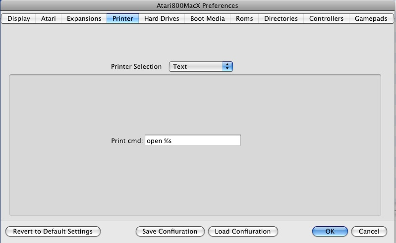
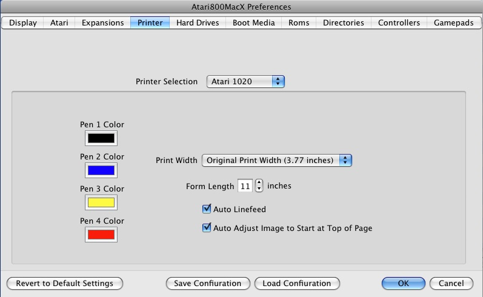
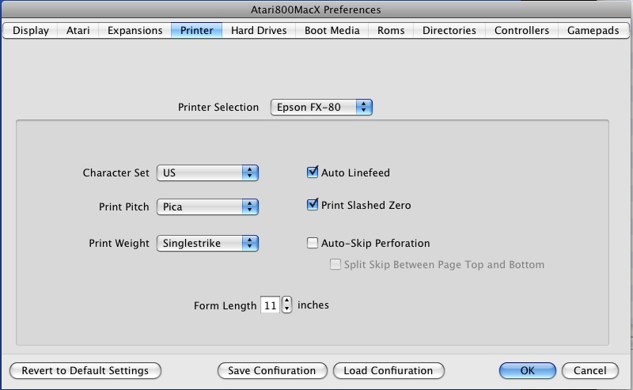

Preferences Window
Printer Tab
|
|
Atari800MacX
Help Preferences Window Printer Tab |

Print Command:
The only option for this printer type is the command used to print. Within the command, %s is used to represent the file name of the temporary file generated during printing. For example, if you wanted the printed text to be opened in BBEdit, you would enter "bbedit %s" (without quotes) in the box. By default, the OSX command "open %s" is used, which will open the printed text in TextEdit by default, unless you have changed your file associations. The temporary files used for printing are created in the printer output directory, which you can choose on the Default Directories Tab. Also, if you have UNIX printing set up, you could directly print using "lpr %s"
Character Set:
This option allows you to choose which international character set will be used with the printer. On the real Atari 825, this was set by a DIP switch.
Form Length:
This option sets the form length, in inches, for pages output by the Printer Emulation. The real Atari 825 does not have a concept of form feeds or page length, but this setting is used to determine the length of a page in the PDF output file from the Printer Emulation. For more details, see the Printer Emulation help page.
Auto Linefeed:
This option, which is set by default, will automatically add a linefeed character to every carriage return sent from the emulated Atari to the emulated Printer. This function was normally preformed by the printer hardware interface or driver on the Atari (Atari 850 or other). If you get blank lines in your output, you may need to turn this option off.

Pen 1-4 Color:
This option allows you to choose the color of each pen in the Atari 1020 printer. specifying the values of Red, Green, and Blue between 0-255 for each one.
Print Width:
This original Atari1020 used 4" wide paper, and had a print width of 3.77 inches. You can use this original print width centered in normal width modern paper, or you can specify double print width, in which case all of the printer output will be scaled up by a factor of 2 (both height and width), and the printer output will fill most of the width of modern paper.
Form Length:
This option sets the form length, in inches, for pages output by the Printer Emulation. The real Atari 825 does not have a concept of form feeds or page length, but this setting is used to determine the length of a page in the PDF output file from the Printer Emulation. For more details, see the Printer Emulation help page.
Auto Linefeed:
This option, which is set by default, will automatically add a linefeed character to every carriage return sent from the emulated Atari to the emulated Printer. This function was normally performed by the printer hardware interface or driver on the Atari (Atari 850 or other). If you get blank lines in your output, you may need to turn this option off.
Auto Adjust Image to Start of Page:
This option automatically readjusts the paper, so that the output of the printer starts at the top of the page. This is useful for the 1020, as the printer may print above the start paper location, and would then print off the top of the page.

Character Set:
This option allows you to choose which international character set will be used by default with the printer. On the real Epson, this was set by a DIP switch.
Print Pitch:
This option allows you to choose which character pitch will be used by default with the printer. On the real Epson, this was set by a DIP switch.
Print Weight:
This option allows you to choose which character weight will be used by default with the printer. On the real Epson, this was set by a DIP switch.
Form Length:
This option sets the form length, in inches, for pages output by the Printer Emulation. On the Epson emulation, this sets both the internal page length in the emulated printer, as well as determining the length of a page in the PDF output file from the Printer Emulation. For more details, see the Printer Emulation help page.
Auto Linefeed:
This option, which is set by default, will automatically add a linefeed character to every carriage return sent from the emulated Atari to the emulated Printer. This function was normally performed by the printer hardware interface or driver on the Atari (Atari 850 or other). If you get blank lines in your output, you may need to turn this option off.
Print Slashed Zero:
This option allows you to choose if zero characters are printed with a slash by default with the printer. On the real Epson, this was set by a DIP switch.
Auto Skip Perforation:
This option, sets the printer to automatically skip 6 lines at the end of the page. This is very useful for program listings and other non-page formated output. On the real Epson, this was set by a DIP switch. Also, if you choose this option, you may additionally choose to split the 6 lines between the top and bottom of the page, giving a 3 line margin at the top, and a 3 line margin at the bottom of the page. This additional option was not available on the original printer.